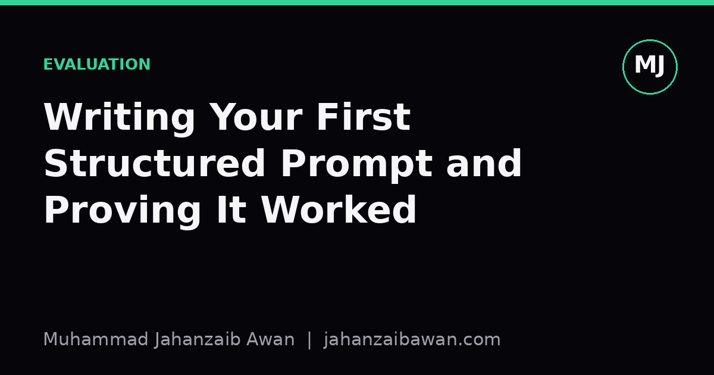

Writing Your First Structured Prompt and Proving It Worked
A step-by-step look at turning a vague instruction into a structured prompt, and the small evaluation that tells you whether the change actually helped.

Why 'it feels better' is not evidence
Most people's first encounter with prompt engineering goes something like this: you write a loose instruction, the model gives back something plausible, you tweak the wording, and the new output feels a bit more on-target. That feeling is almost worthless as evidence. Language models are good at producing text that sounds competent, and our own pattern-matching brains are good at noticing whatever confirms we did something useful. Without a fixed task, a fixed set of inputs, and a fixed way of scoring the outputs, you cannot tell whether your prompt change improved anything or whether you just got lucky on the three examples you happened to try.
This matters because prompts are, functionally, a piece of your system's logic. If you would not ship a change to a scoring function without testing it, you should not ship a change to a prompt without testing it either. The good news is that you do not need anything elaborate to start doing this properly. You need a small, held-out set of inputs that represents the task, a simple scoring rule, and the discipline to compare two things under exactly the same conditions. That is the whole idea, and it is worth working through once by hand so it stops feeling abstract.
From a vague instruction to a structured prompt
Say the task is extracting a shipping address and a requested delivery date from customer emails, which then get passed to a logistics system. A first attempt might be: 'Read this email and tell me the address and delivery date.' That is a free-text instruction with no shape. The model might answer in a sentence, a bulleted list, or a paragraph, and the date might appear as '12 March', 'next Tuesday', or '03/12', depending on how the email phrased it. Every one of those variations is a small parsing headache downstream.
A structured version fixes the shape of the answer rather than just asking nicely for the content. Something like: 'Extract the shipping address and delivery date from the email below. Return only valid JSON with exactly two keys, address and delivery_date. The address should be a single string. The delivery_date should be in YYYY-MM-DD format; if no explicit date is given, use the string unknown. Do not include any text outside the JSON object.' This is longer, less friendly to read, and far more useful, because it constrains the format, specifies the fallback behaviour for the awkward case of a missing date, and removes ambiguity about where the answer starts and ends.
The temptation at this point is to eyeball five emails, see nicely formatted JSON come back, and declare victory. Resist that. The structured prompt might produce perfect JSON on those five and silently fail on the sixth, where the email mentions two addresses, one for billing and one for shipping, and the model picks the wrong one. You only find that by testing against a representative set, not a convenient one.
Building the actual test and the comparison
Pull together, say, 40 real or realistic customer emails, each with a known correct address and delivery date that you or a colleague have labelled by hand. Split them so you are not tuning and evaluating on the same examples: use maybe 10 for trying out prompt wording and the remaining 30 as a held-out set you only look at once you have settled on a final version. This is the same leakage-aware logic that applies to any machine learning evaluation. If you keep adjusting the prompt based on how it performs on your 'test' set, that set has become part of your development process and can no longer tell you how the prompt will do on new emails.
For scoring, keep it simple and automatable. For each email, check whether the extracted address string matches the labelled one closely enough, for instance via exact match after basic normalisation like lowercasing and stripping punctuation, and separately check whether the delivery date matches exactly in YYYY-MM-DD form or is correctly marked unknown. Report two numbers: address accuracy and date accuracy, rather than one blended score, because a prompt that is excellent at addresses but weak on dates needs a different fix than one that is weak at both.
Run the vague prompt and the structured prompt over the same 30 held-out emails, with the same model, same temperature setting, and nothing else changed. Suppose the vague prompt gets address accuracy of 61 percent and date accuracy of 48 percent, largely because free-text answers are hard to parse reliably and dates come back in inconsistent formats. The structured prompt gets address accuracy of 83 percent and date accuracy of 77 percent. That gap, on a fixed set under fixed conditions, is a real signal, not a feeling. You can also inspect the failures: perhaps most of the remaining date errors come from emails that mention a date range rather than a single date, which tells you exactly what to address in version three of the prompt, such as adding an explicit instruction for how to handle ranges.
What this buys you in practice
Once you have this harness, prompt iteration stops being guesswork and becomes something closer to normal engineering. You can try a few-shot version that includes two worked examples inside the prompt, rerun it against the same 30 emails, and see whether 77 percent date accuracy moves to 85 percent or drops to 70 percent because the examples biased the model towards one date format. You can also check something easy to miss: does the structured prompt do worse on a subset, say emails written in a casual tone with slang, even if it does better overall? A single aggregate number can hide a regression that matters a lot for a specific slice of your real traffic.
The other benefit is reproducibility. If a colleague asks why you switched prompts, you have an artefact: the held-out set, the scoring script, and two numbers before and after, rather than an anecdote about how the output 'seemed cleaner'. That artefact also protects you from a quieter failure mode, which is a prompt that happens to work well on the handful of cases you tested during development but was never checked against anything resembling the full range of real inputs.
None of this requires sophisticated tooling. A spreadsheet or a short script, a few dozen labelled examples, and a fixed scoring rule will take you most of the way. The discipline is the valuable part: separate the examples you tune on from the examples you judge on, fix everything except the one thing you are testing, and report the breakdown rather than a single comfortable average. Do that once on a small task, and it becomes obvious how much of what passes for prompt engineering elsewhere is really just untested intuition.